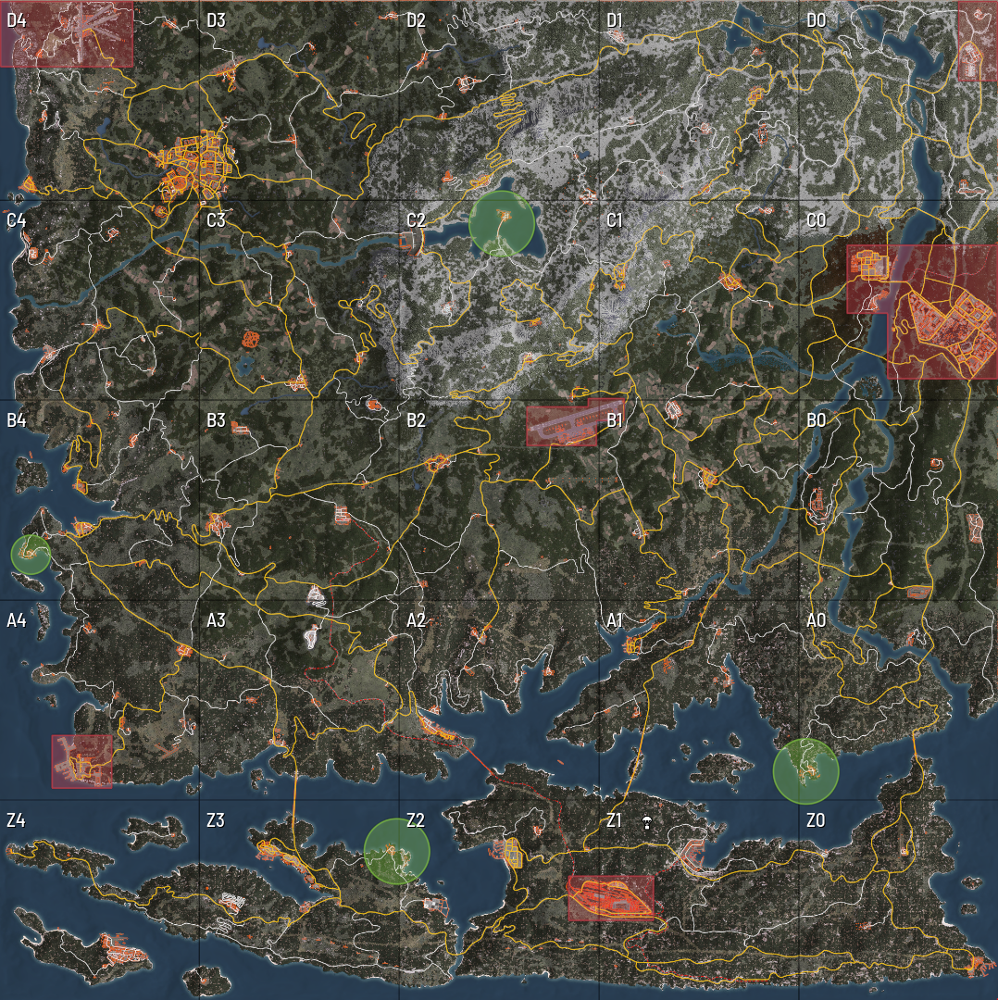
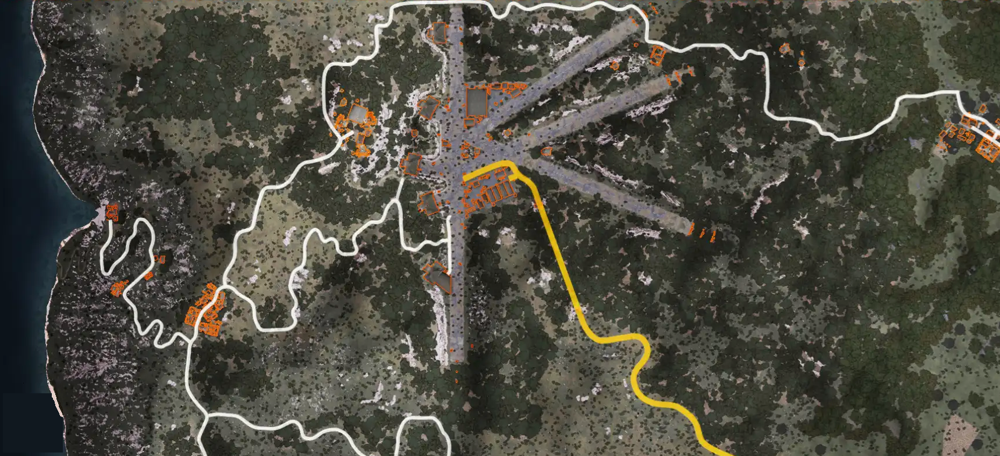
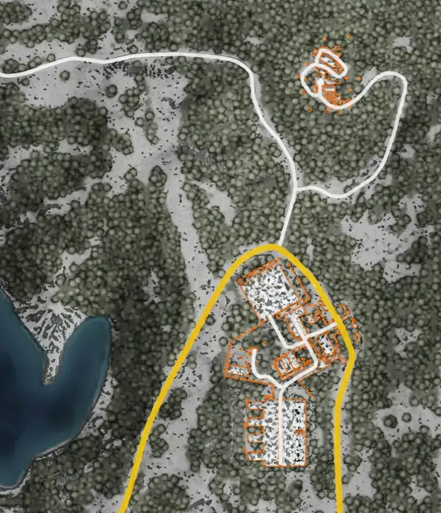
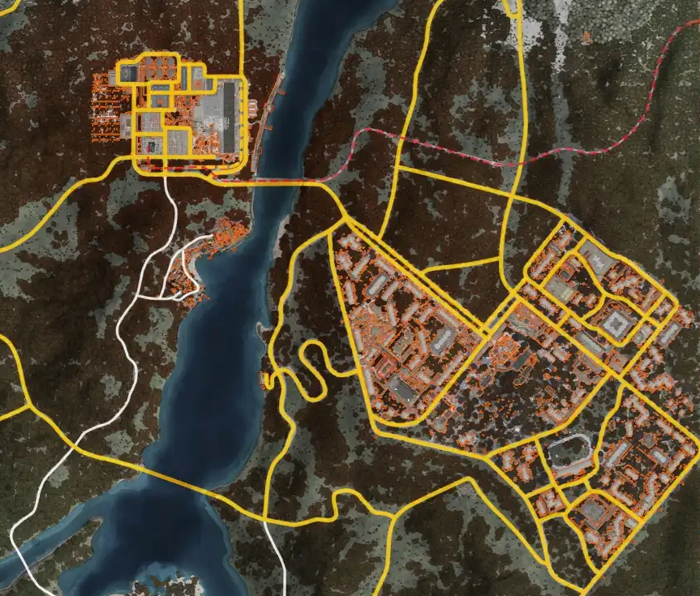
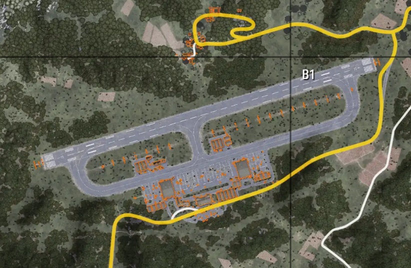
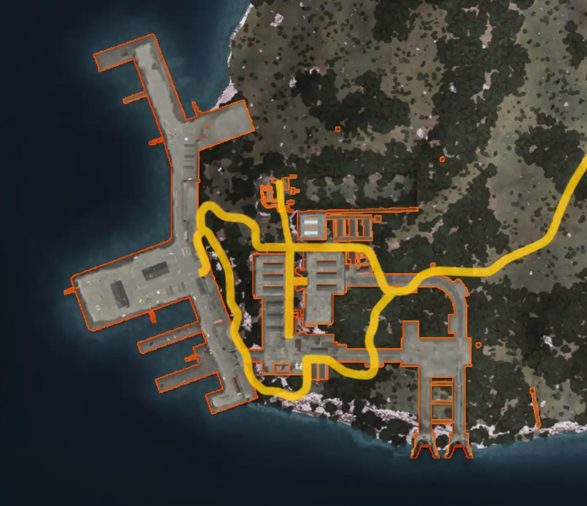
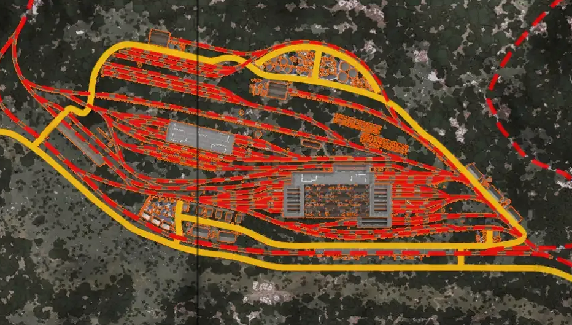
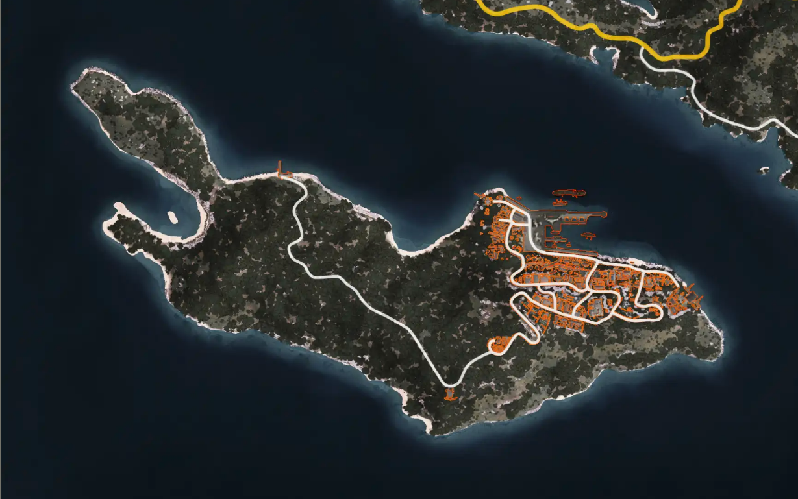

Les Zones de Non Droit correspondent à d'anciennes installations stratégiques, militaires ou industrielles abandonnées après la Troisième Guerre mondiale.
Les Sentinelles continuent parfois de protéger certains secteurs dont plus personne ne connaît réellement l'importance.
Richesses, secrets et dangers s'y côtoient. Aucun survivant ne peut prétendre savoir ce qui s'y cache encore. Certaines réponses pourraient pourtant s'y trouver... pour ceux prêts à prendre le risque.
Comme indiqué dans le Règlement du serveur, les ZDND sont des secteurs où les règles habituelles liées aux agressions et aux affrontements ne s'appliquent plus.
Entrer dans une ZDND revient à accepter les risques qui y sont associés.
Soyez vigilants et considérez ces secteurs comme des zones hostiles.
Les lieux suivants doivent toujours être considérés comme des ZDND :

Cette ancienne installation aérienne fut l'un des points militaires majeurs de la région. Les pistes, hangars et zones de contrôle ont été abandonnés dans le chaos des derniers jours.
Aujourd'hui, le secteur attire les survivants en quête de matériel, mais également ceux qui savent qu'un lieu stratégique ne reste jamais totalement désert.

Perché au sommet des collines, ce complexe assurait autrefois la surveillance aérienne de toute la région. Les antennes sont aujourd'hui silencieuses.
Du moins en apparence. Certains survivants prétendent encore capter d'étranges signaux à proximité du site. D'autres affirment que les Sentinelles qui patrouillent aux alentours ne le font pas par hasard.

Cette vaste zone industrielle alimentait autrefois plusieurs villes de la région. Les bombardements puis l'effondrement des infrastructures ont transformé le secteur en un immense cimetière de béton et d'acier.
Dépôts, ateliers, entrepôts et usines abandonnées attirent désormais les survivants à la recherche de ressources rares. Mais les richesses attirent également ceux qui sont prêts à tuer pour les obtenir.

Avant la guerre, cet aéroport constituait l'un des principaux points de transit de la région. Lorsque le conflit a éclaté, il fut réquisitionné par l'armée puis abandonné dans le chaos des derniers jours.
Aujourd'hui, les pistes sont silencieuses, les tours de contrôle désertes et les hangars éventrés. Pourtant, des survivants affirment encore apercevoir des lumières au loin certaines nuits.
Nul ne sait ce qui s'y déroule réellement. Une chose est certaine : ceux qui s'y aventurent reviennent rarement avec les mêmes réponses.

Avant la chute du monde, ce port constituait l'une des principales portes commerciales de la région. Durant les derniers mois de la guerre, il fut utilisé pour évacuer matériel, civils et ressources stratégiques.
Beaucoup pensent que tout a disparu depuis longtemps. D'autres sont convaincus que certaines cargaisons n'ont jamais quitté les quais. Encore aujourd'hui, des survivants risquent leur vie pour fouiller les docks abandonnés.

Durant la guerre, ce complexe ferroviaire servait à l'acheminement de matériel militaire et de populations déplacées. Lorsque les frontières se sont fermées, les trains ont cessé de circuler mais les marchandises sont restées.
Des kilomètres de rails rouillés, d'entrepôts abandonnés et de wagons oubliés forment désormais un véritable labyrinthe. Bandits, pillards et aventuriers s'y croisent régulièrement.
Dans ce dédale de métal, personne ne viendra vous secourir.

Isolée du reste du territoire, cette petite île semblait autrefois insignifiante. Pourtant, depuis la fin de la guerre, elle est devenue un refuge discret pour ceux qui souhaitent disparaître.
Contrebandiers, fugitifs et trafiquants y auraient trouvé refuge loin des regards. Les rumeurs sont nombreuses. Les preuves, beaucoup moins.